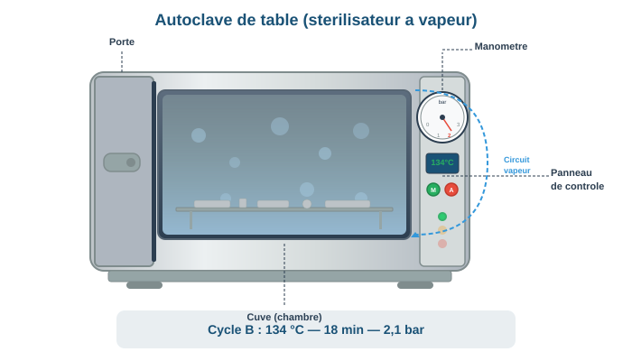
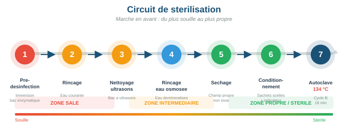

Stérilisation et désinfection
Objectifs d'apprentissage
- Connaître les normes applicables à la stérilisation (EN 13060, ISO 17665-1, ISO 11607-1)
- Maîtriser les étapes du protocole de stérilisation par autoclave
- Savoir traiter le matériel thermosensible en 7 étapes
- Comprendre les différents types de contrôles (physiques, chimiques, biologiques)
- Assurer la traçabilité complète du processus de stérilisation
1. Normes de référence
La stérilisation dans le cadre du tatouage et du perçage s'appuie sur des normes précises, issues du domaine médical. Leur respect est une obligation réglementaire.
| Norme | Objet | Points clés |
|---|---|---|
| EN 13060 | Petits stérilisateurs à vapeur (autoclaves) | Définit 3 types de cycles : B, S et N |
| ISO 17665-1 | Stérilisation à la chaleur humide | Exigences de développement, validation et contrôle de routine |
| ISO 11607-1 | Emballages de stérilisation | Exigences pour les sachets, gaines et conditionnements |
Cycles autoclave EN 13060
- Cycle B (Big) : le plus performant. Stérilise tous types de charges (solides, creux, emballés, textiles). C'est le cycle recommandé pour les professionnels du tatouage et du perçage.
- Cycle S (Specific) : cycle paramétrable pour des charges spécifiques définies par le fabricant.
- Cycle N (Naked) : uniquement pour les instruments pleins, non emballés, utilisés immédiatement après stérilisation. Inadapté au stockage.
134 °C pendant 18 minutes (prions) ou 121 °C pendant 20 minutes. Le cycle B à 134 °C / 18 min est le standard pour la destruction de tous les micro-organismes, y compris les agents transmissibles non conventionnels (ATNC / prions).

Pour consulter les références normatives complètes — Annexe B — Normes applicables : consultez la liste complète des normes EN 13060, ISO 17665-1 et ISO 11607-1
2. Protocoles de traitement du matériel
Matériel thermorésistant (autoclavable)
Le protocole suit une séquence stricte. Chaque étape est indispensable : en sauter une compromet l'ensemble du processus.
| Étape | Action | Détail |
|---|---|---|
| 1 | Pré-désinfection | Immersion immédiate dans un bain détergent-désinfectant (15 min minimum) |
| 2 | Rinçage | Eau courante pour éliminer le produit |
| 3 | Nettoyage | Ultrasons (recommandé) ou brossage manuel |
| 4 | Rinçage | Eau osmosée ou déminéralisée (évite les dépôts calcaires) |
| 5 | Séchage | Séchage soigneux avant conditionnement |
| 6 | Conditionnement | Sachets de stérilisation scellés (norme ISO 11607-1) |
| 7 | Stérilisation | Autoclave cycle B, 134 °C, 18 min |

Matériel thermosensible : protocole en 7 étapes
Pour le matériel ne supportant pas la chaleur de l'autoclave, une désinfection de haut niveau (DHN) remplace la stérilisation :
- Pré-désinfection : immersion en bain détergent-désinfectant
- Rinçage : eau courante
- Nettoyage : ultrasons ou brossage
- Rinçage : eau courante
- Désinfection de haut niveau : immersion dans un produit sporicide (acide peracétique, glutaraldéhyde 2 %) selon le temps de contact indiqué par le fabricant
- Rinçage abondant : eau stérile ou osmosée
- Séchage et stockage : séchage immédiat, stockage en milieu protégé
Chaque fois que possible, utilisez du matériel stérile à usage unique (aiguilles, buses, tubes d'encre). Cela supprime le risque lié au retraitement et simplifie la traçabilité. Le matériel réutilisable doit être réservé aux instruments de qualité supérieure qui le justifient.
Pour le protocole détaillé de traitement du matériel réutilisable — Annexe G — Fiches de procédures : consultez la fiche G.5 — Circuit de stérilisation du matériel réutilisable
3. Contrôles et traçabilité
La stérilisation n'est efficace que si elle est contrôlée. Trois niveaux de contrôle complémentaires garantissent la fiabilité du processus.
| Type de contrôle | Quoi | Quand |
|---|---|---|
| Physique | Vérification des paramètres (température, pression, durée) sur le diagramme de cycle | À chaque cycle |
| Chimique | Indicateurs de passage (vireurs de couleur sur les sachets) et test de Bowie-Dick (pénétration de vapeur) | Indicateurs : chaque sachet. Bowie-Dick : chaque jour d'utilisation |
| Biologique | Ampoules de spores (Geobacillus stearothermophilus) : test de référence | Hebdomadaire ou selon les recommandations du fabricant |
Le test de Bowie-Dick vérifie la bonne pénétration de la vapeur dans l'autoclave. Il est réalisé chaque jour avant le premier cycle de stérilisation, à vide (sans charge). Un test échoué signifie que l'autoclave ne peut pas garantir une stérilisation efficace.
Traçabilité
Chaque cycle de stérilisation doit être enregistré dans un registre (papier ou numérique) comportant :
- Date et heure du cycle
- Numéro de cycle / numéro de lot
- Contenu de la charge (instruments stérilisés)
- Résultat des contrôles (diagramme, indicateurs chimiques, test biologique)
- Nom de l'opérateur
- Date de péremption de la stérilisation (6 mois en double emballage, variable selon les conditions de stockage)
Les registres de stérilisation et les résultats des contrôles doivent être conservés pendant au minimum 3 ans. En cas de contrôle ARS, ils constituent la preuve de la conformité de vos pratiques.
Étude de cas
Travaux pratiques
Objectif : Maîtriser le protocole en 7 étapes.
Consigne : À partir du matériel suivant (pinces Pennington, tubes receveurs, embouts), décrivez chaque étape du cycle de stérilisation : produit utilisé, temps d'immersion, température, type de conditionnement. Remplissez une fiche de traçabilité complète (date, n° cycle, contenu, résultats indicateurs, signature).
Durée estimée : 25 min
Objectif : Distinguer les cycles B, S et N.
Consigne : Pour chaque situation, indiquez le cycle autoclave approprié et justifiez : (a) pinces emballées en sachet, (b) embouts massifs non emballés, (c) charge mixte creuse et textile. Que faire si votre autoclave ne dispose pas du cycle B ?
Durée estimée : 15 min
Glossaire du module
| Terme | Définition |
|---|---|
| Autoclave | Appareil de stérilisation utilisant la vapeur d'eau sous pression à 134 °C, permettant la destruction de tous les micro-organismes y compris les spores |
| Stérilisation | Procédé validé visant à détruire ou éliminer tous les micro-organismes viables, y compris les spores bactériennes |
| Pré-désinfection | Première étape du traitement du matériel : immersion immédiate dans un bain détergent-désinfectant pour réduire la charge microbienne |
| Cycle B | Cycle autoclave le plus performant (norme EN 13060), capable de stériliser tous types de charges : solides, creux, emballés et textiles |
| NF EN 13060 | Norme européenne définissant les exigences pour les petits stérilisateurs à vapeur d'eau (autoclaves de table) |